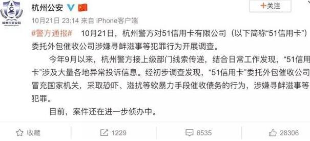

10.21，网上热传杭州51信用卡公司被端，据传13辆警车都坐不下，原因有的说是非法获取用户信息，还有说是暴力催收的，反正互金嘛，跟这些脱不了干系。
还有消息说，国家在整顿互联网金融，没有经过验收的平台年底都要取缔，看来继柬埔寨网赌之后，互金行业也要大失业了。

10月21日上午，大量警察突击清查上市公司“51信用卡”
可以预想的是，很多互金从业者习惯了赚快钱，让他们踏实得上班或者创业基本很难，估计还是会做一些“捞偏门”的生意，所以今天分享一些捞偏门生意，也给大家提个醒，不要上当受骗。
生意的门道
生意分为很多种，你和一个人谈做什么生意最赚钱，他要是立马就说什么新零售、O2O、重餐饮、短平快、加盟……你基本可以判断这是个新手。
在生意场上摸爬滚打的老油条们自然知道什么生意最赚钱，虽然他们可能做不来，也可能不愿意做。
这种生意一般分为两大类：江湖生意和捞偏门生意。
江湖生意很好理解：沙石土方、文玩，海鲜，木材，KTV，洗浴中心、茶楼、宾馆……
为什么一般老板做不来？
1、门槛看似低实则高。一个什么不懂的外行，想要轻易进入江湖行业，不熟悉规则的话，很难找到生存机会。水深导致外行被宰，甚至内行被宰的更狠。没有太多外来竞争者，使此行业内的人会维持较高的利润率。
2、价格模糊，没有统一标准。一方沙子，在这里可以卖50一立方，隔个县，可以卖100一立方。茶叶也是，5年普洱和20年的价格差几倍，会有严格算法么？
3、需要较强的背景。这些生意或多或少是游离在灰色地带，没有背景揽不了这个瓷器活。举例茶楼，如果只卖茶，不做其它灰色生意，没有几家能靠卖茶活下去。
4、家族生意模式流行。卖茶的，他的亲戚家人大部分也卖茶。同行之间不是竞争对手，而是一个联盟，共同维护着生态体系，比如莆田系。联盟要保持相互捆绑，共同进退的关系，必须建立在一种强关系的基础上。
5、风险与收益成正比。人在江湖飘，哪能不挨刀。做这份生意，有灰色东西利润高些，自然就要承担相应的风险。就像开龙门客栈，做个大单就发财，但万一碰上了硬茬，也会开不下去了。
这些东西，靠学是学不会的，因此生意场上也不特别看重学历。做这些生意，最重要的一是家族积累，二是机遇人脉，不展开懂的自然懂。
不排除互金的老板们会做这些生意，一般的互金从业者还没这个实力。
“捞偏门”
然后就是重头介绍的“捞偏门”生意。
你可能认识几个人，亲朋好友，或者干脆就是邻居，平时没有正当职业也不用去上班，但是看起来不愁吃喝，而且还出手阔绰，几年下来小车都开上了。
这些人可能做的就是“捞偏门”生意。
那他们常见的赚钱办法有哪些呢？
一、放高利贷
普通老百姓千万不要和那种人扯上关系，一扯上必定让你家破人亡。
放水的人可以说对我国法律之熟稔远超律师之上，常见的操作办法就是，假如借20万，给你本金就十五万，但汇给你卡上是20万，再逼你去ATM机上把那五万取出来，至于利率那基本上就是银行同期银行利率的四倍。
放水之人的风控做的可比一般银行好很多，就看你是否沪籍，老婆孩子父母是否在上海有住所，如果确定根在上海，那基本上就敢借了。
如果是大额的借款，基本上会让你写一个公正的委托书文书，玩高利贷的可不喜欢啥房子抵押，然后再起诉，再法院拍卖优先受偿这么复杂的流程，基本上你不还钱就用经过公正的委托书把你的房子过户到他们自己人名下了，因为白纸黑字写着的呀，你同意对方代你过户。
当然这玩意也不是不能破解，简单的操作手法就是搞虚假诉讼，债务人找一个亲戚，写个虚假的借条，然后起诉，抢在放水者之前，把房子给查封了，这么做房子是保得住，但属典型违背道上规矩的事情，放水之人就会采取更野蛮的讨债手段来对付你，同时你那个做帮你做虚假诉讼的亲友也要忍受这种待遇，如果债务人玩这一手，我个人给个建议就是玩好之后，和这事情有关的人最好都离开上海三五年以上。
当然放水之人最喜欢的客户，还是那种涉世不深的小白或一时资金紧张调下头寸的正常生意人。放水只是赚钱的前戏，真正赚钱的是如何讨债，那才是硬实力的体现。
在高利贷的行当里里，上海混子也扮演了相当不光彩的角色，如果说安徽人和东北人是干粗活的，那不少上海人干的就是类似汉奸。中介的活，我之前讲过不少平账和找小贷继续借钱的玩法，不少上海人就在其中做中介，你不是还不出，我带你去找其他大哥，套路贷不少门店的前台销售人员不少也是上海人，因为套路贷第一步不是暴力，是欺骗，上手就来几个东北大汉，那容易引起对方的警惕，东北人一般是如果你假设不想贷了，说必须付服务费2000，否则不让走，这时候才出现的。
而且上海人也可以说大家都是上海人，我不会骗你的，就走个形式，公司规矩之类的，可惜上海这个出了杜月笙的地方，玩套路贷都已经给人做下手了。
二、讨债
为何我说讨债是硬实力的体现，这社会上混的人也分个三六九等，古惑仔都想进化成杜月笙，各种小混混也想不劳而获又整天花天酒地，而不是在工地上累死累活，但走这条路之前，有一个简单的考核标准，就是你会不会讨债，或者说你是否具备讨债的基本素质，如果你有，那么恭喜，你从此开始可以不读书，不朝九晚五的工作。
但是你要有几个技能：
有公安的关系，可以查出债务的行踪。
可以在半小时之内，调集十人以上，围住债务人的住房的大楼。
真的因为寻衅滋事罪进去了，不担心。
没良心，为了钱敢往人脸上吐痰，往人家里扔死猫，死耗子。
如果对方老赖有经验，敢于持续闹一个礼拜。
如果你有以上几个能力，那你年入百万不是梦，注意这是大佬的收入，下面的古惑仔可不是这样，大佬们平时也是要养人的，没事就要免费请小喽喽们去吃吃饭，泡泡妞联络感情，着这样才能在用人的时候叫的动人。那些小喽喽挺有意思，我记得早年有人问过我一个问题，就是上海现在有很多90后保安，月收入才3000，那到底如何在上海养活自己，其实老乡中的大佬们遇到生意就常叫这些90后的保安。
暴力讨债这行业其实挺有意思的，上海不少做套路贷的大佬，很多都是靠讨债出身，靠讨债积累了第一桶金，然后自己再放高利贷，接着玩套路贷。
三、中介
如果说放高利贷和讨债是社会上混的人传统业务，而且门槛相对较低且业务模式具有可复制性属于古惑仔的入门教程，那么中介就属于中级业务，这里的中介可不是马路上随处可见的房产中介，那行当属于体力忽悠活，我会专门写篇文章讲里面忽悠的道道。
社会上混的人有个特点，一缺乏专业技能、二缺乏吃苦耐劳的精神、三缺乏破坏性创造的企业家精神，但有个特点就是交友比较广泛，整天混迹棋牌室、公安局、发廊、法院、银行等场所，警察、律师、小混混、老流氓、金融工作者等都认识点，那就具有了资源整合的能力，而且真混的好的人，多少家里有个房亲戚在政府系统、银行、电信里工作。
简单说，公安局工作的可以帮忙办取保、电信移动的查通话记录、银行工作的查流水、车管所工作的办年检、驾照等等，利润高到什么程度，就是一旦做过了，那就再也不想去上班了。
类似这种生意，基本上都是熟人介绍熟人的生意，谁都不能保证自己的人生一帆风顺，一旦遇到事情，确实会出现有些服务无法在市场上购买到，服务提供方也不会在市场上去做宣传，那社会上混的力量就体现出来了，因为认识的人多，根据互联网思维，只要流量够大，就存在成功的可能性，而且毕竟这玩意偏门，试问有正经生意和工作的人谁会去干那下三路的事情，但你的人生上碰到下三路的人，你用正常的手段真对付不了他们。
当你的司法服务供给不足的时候，那市场总会用其他方式来达到平衡，哪怕是一种扭曲的变态的平衡。
说到黄牛补充几句，现在黄牛的业务领域越来越大了。
自上海限购以来，黄牛做假结婚，假离婚搞房票就是一个持续不断热门的生意。黑市行情基本上，一个房票十万起，女性价格更高，男人愿意做的多，女性少点。
然后还有限制外牌之后，沪C拍照的生意也出来，居住证严格之后，靠橡皮图章，串通街道搞居住证也是一个常规热门项目。
还有居住证转户籍的项目也是持续不断上有政策，下有对策的玩了好多年。高级点的中介还玩各种项目申报，骗补贴等等。只能说玩法太多，你只要精于一个领域，总能大有作为。其他的比如POS机、医托医闹的都是小打小闹了。
看了这么多，你觉得捞偏门的生意到底好做不好做呢？